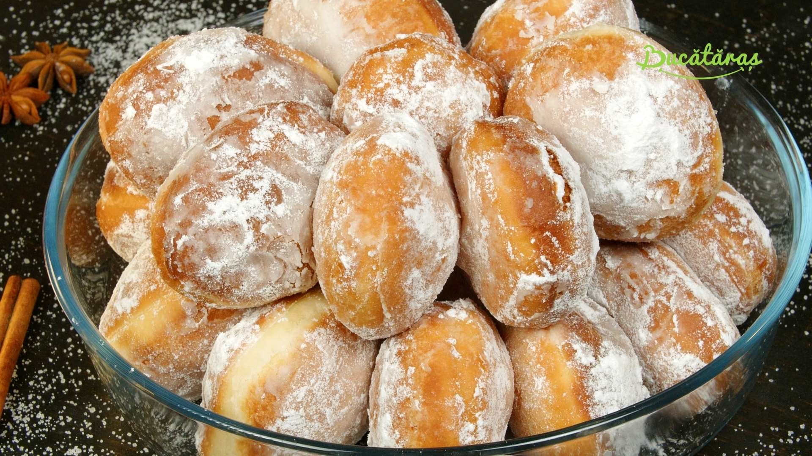

Reteta gogosi
Back to Recipes Index

Descriere
Gogosi are traditional Romanian doughnuts, often enjoyed as a sweet treat, typically dusted with powdered sugar or filled with jam.
De ce avem nevoie?
- 2 oua
- 100g zahar
- 500g faina
- 1 pliculet praf de copt
- 1 lingurita esenta de vanilie
- 1 varf de cutit sare
- Ulei pentru prajit
- Smantana si dulceata pentru servit
Ce facem acum?
- Incepe prin a bate ouale cu zaharul pana devin spumoase.
- Adauga faina, praful de copt, esenta de vanilie si sarea, amestecand bine.
- Incalzeste uleiul intr-o tigaie adanca.
- Cu ajutorul unei linguri, formeaza gogosi si prajeste-le in uleiul incins pana devin aurii.
- Scoate gogosile pe un prosop de hartie pentru a absorbi excesul de ulei.
- Serveste-le calde, presarate cu zahar pudra sau cu dulceata si smantana.